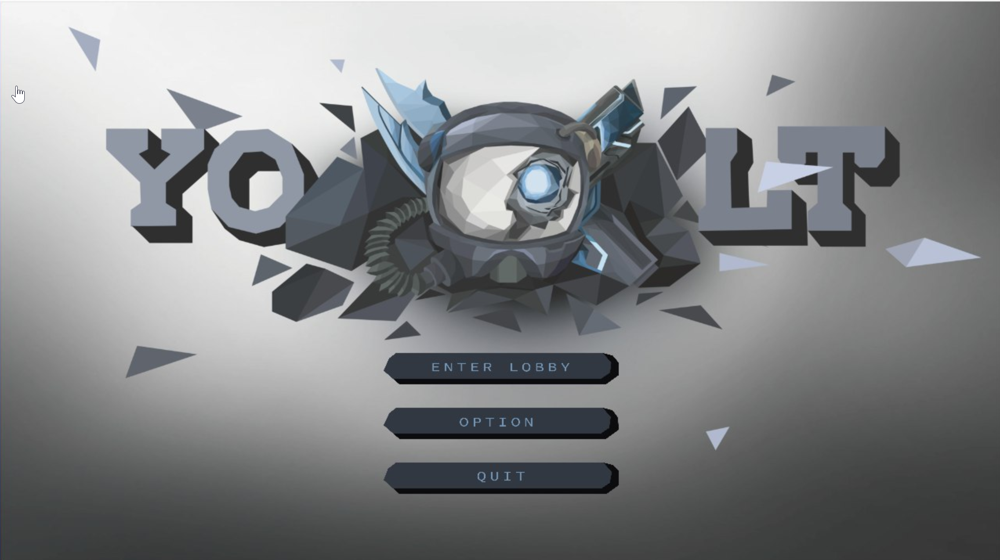
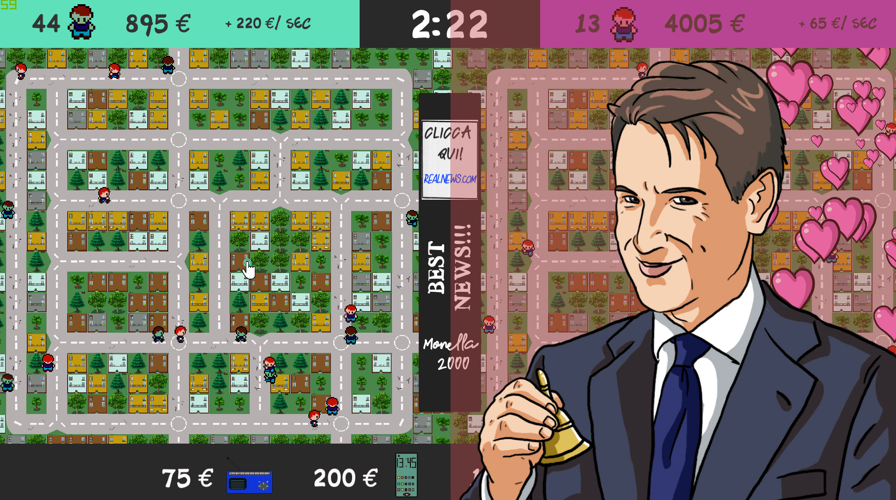

Blindata is a SAAS platform for the Data Management. More information here: https://blindata.io/

YOLT
Y.O.L.T is a shooter game with isometric camera, in a 3D environment. The player commands a character which shoots and kills various enemies. When a character dies, the player will become a “ghost” to examine the area around the team, to advise the other players about the danger, and after collecting enough lùth, they will become a character’s add-on, linked to an alive player for a limited time. When the player runs out of lùth, they turn back the “ghost” state. When the resource is filled up again, the player can attach themselves again. If one of the alive players uses the Resurrection item on them, that player can come back to life.
2D platform shooter rogue-lite dynamic game and see how shaped oniric environments and enemies are never the same. Play after play your dream experiences will never be the same. Step up in the oniric world of John becoming more aware of it and master the control over your emotions.

Fake News! This is not a game
"Fake News! This is not a game" is a 2D 1v1 strategy game where you must spread fake news across the population of your town.
Submitted for the Quarantine Jam (13-16/03/2020) which theme was "A lot of". We took on the theme thinking about modern times that are characterized by fast propagation of news, both real and fake.
You and your opponent are the leaders of two political parties and you want to win the next local elections creating a voters basin by influencing citizens with fake news. To do so you can spread them through radio and smartphone.
Though BEWARE of your opponent! It can use the press and the power of the Premier to educate your voters, inducing them to not follow you.